재미로 읽는 경항모 이야기 (3)
게시: 2020-12-03T06:30:50+09:00
<한국이 보유했던 경항모>
HMAS Sydney (1만9천톤, 24.5노트), Majestic-class 경항모이자 호주 해군이 처음으로 보유한 항모. 1944년 HMS Terrible로 진수되었으나 전쟁이 끝나면서 호주에게 매각되어 HMAS Sydney가 됨.
사진 속 모습은 대략 1949년에 찍힌 것. 한국전에도 참전. 불과 10년 사용한 뒤 1958년부터는 고속 병력 수송선으로 사용됨. 그 목적으로 월남전에도 참전.
결국 1973년 퇴역했는데, 관광 명소 겸 박물관 쉽으로 남겨두려는 노력이 있었으나 결국 1975년 매각되어 해체됨. 이걸 매입한 회사는... 한국의 동국제강. 뜯어서 고철로 씀.
** 세번쨰 사진은 점심식사 장면. 저 철제식판을 보고 미국 양덕들이 놀람. "야, 난 저거 미해군에서만 쓰는 줄 알았어"
** 4번째 사진은 고속 병력 수송선으로 개조된 이후의 모습. 의외로 경항모는 함재기 날리는 것 외에 쓸모가 다양하여 특히 평화시에 다목적으로 사용이 가능.
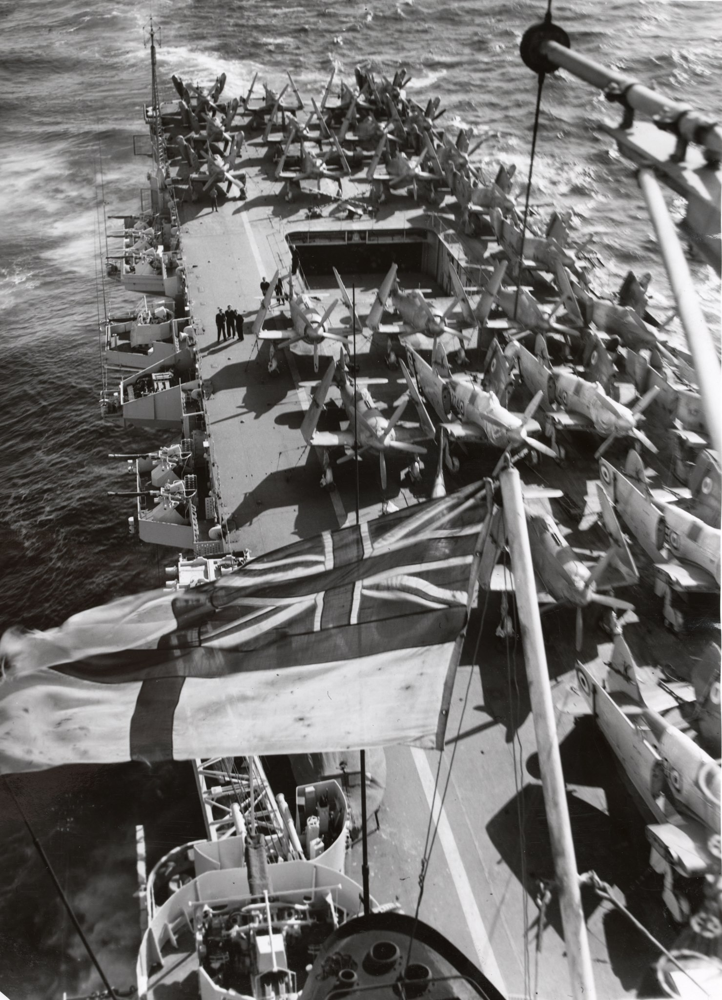 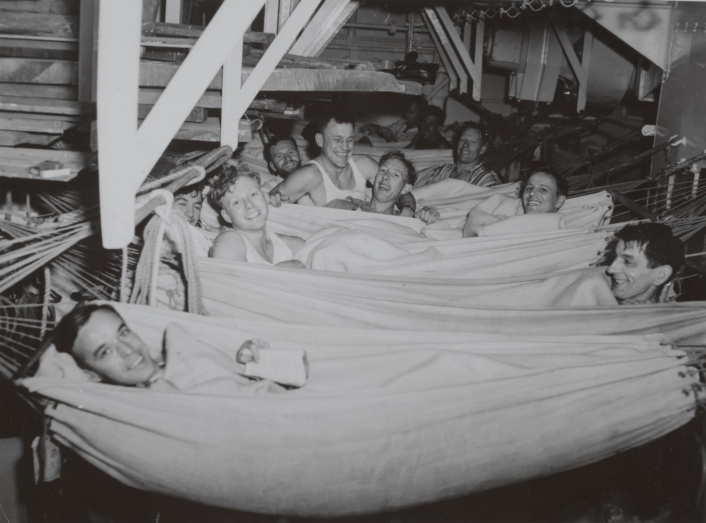 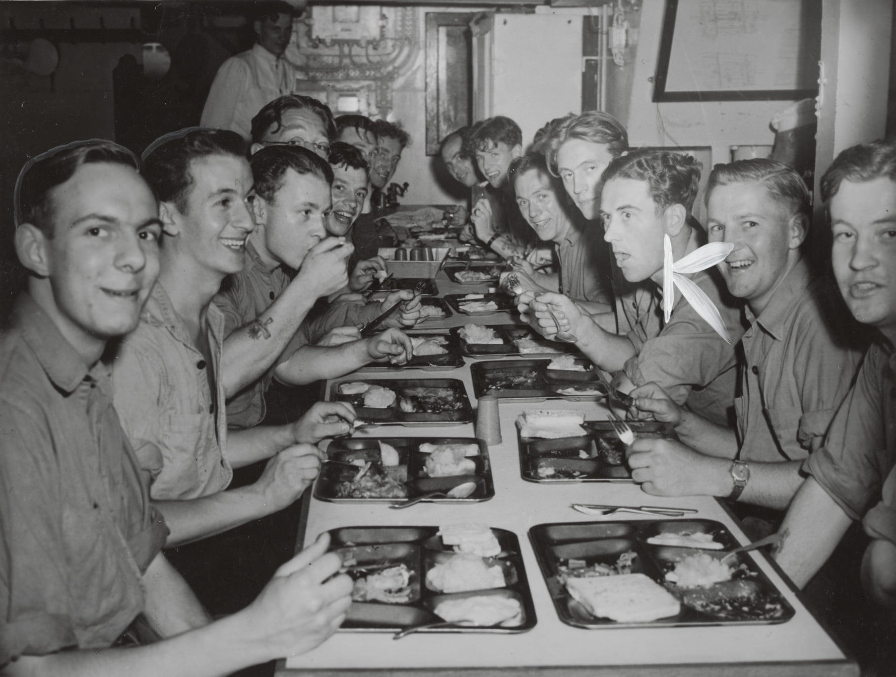 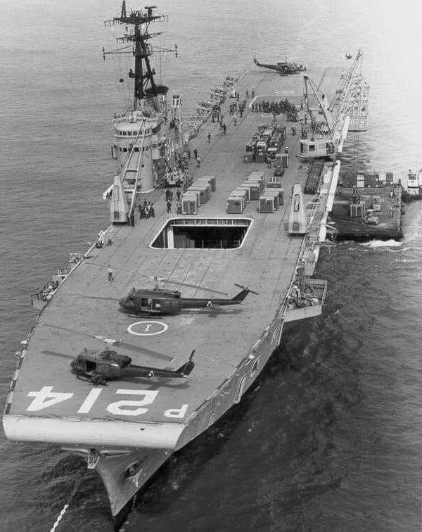
<경항모에 대한 rationale - 대잠전용> WWII 기간 중 격침된 U-boat는 총 632척. 이 중 누구에게 격침당한 것이 많으냐 하면 - 항공기(공군 및 해군)에 당한 것 293척 - 수상함에 당한 것 246척 - 수상함과 항공기 합동작전에 당한 것 37척 - 항구에서 폭격 당한 것 43척 - 항공기로 부설한 기뢰에 걸린 것 12척 - 잠수함에 당한 것 1척
즉 북한 잠수함을 잡는데는 무엇보다 항공기가 가장 유용하다고... 우길 수 있음. 잠수함을 잡는데는 잠수함이 좋다는 소리가 있으나 적어도 실적은 그렇지 않음. ** 사진은 대잠용으로 개조된 B-18B Bolo 폭격기 ** 저 위 통계는 하도 썰이 많아서 정확하지 않을 수도 있음 주의
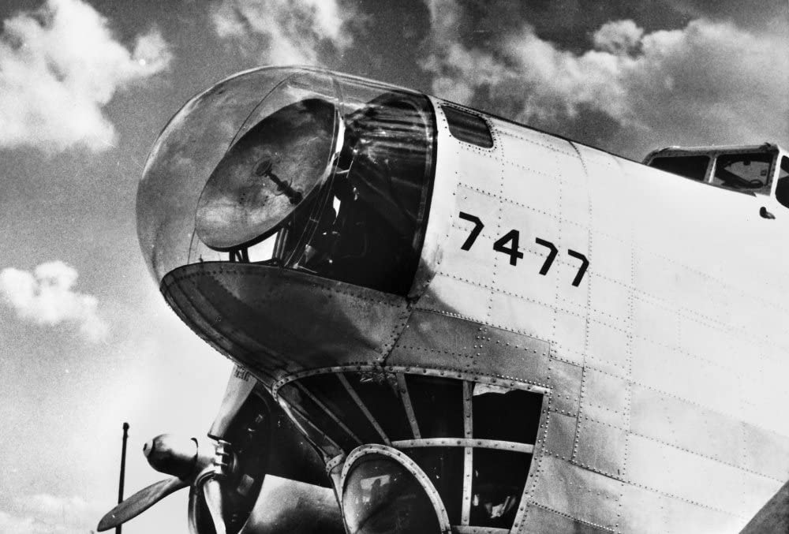
<잠수함을 잡은 인류 역사상 유일한 잠수함>
HMS Venturer. 인류 역사상 다른 잠수함을 격침한 유일한 잠수함.
1945년 2월 일본에게 각종 부품 및 제트기 설계도를 전달해주고 돌아오던 U-864를 노르웨이 연안에서 포착하고 격침. 3시간 넘게 쫓고 쫓기다 어뢰 4발을 17초 간격으로 쏘고 한발만 맞아라 기도. U-boat가 처음 3발은 피했는데 마지막 1발이 오는 것을 모르고 선회하는 바람에 정통으로 명중하여 두동강. 이것이 잠수함이 적 잠수함을 격침한 인류 역사상 유일한 사례.
그런데 이것도 정찰 중에 적 잠수함을 발견한 것이 아니라 독일군 무전을 도청한 영국 정보부가 특정 시간대에 노르웨이 항구로 들어온다는 것을 알아내고 벤춰러를 매복시켰기 때문에 가능했던 것. 잠수함은 주변을 탐색할 수단이 많지 않고 속력도 느리기 때문에 망망대해에서 다른 잠수함을 찾는 것이 영화 속처럼 쉽지가 않음.
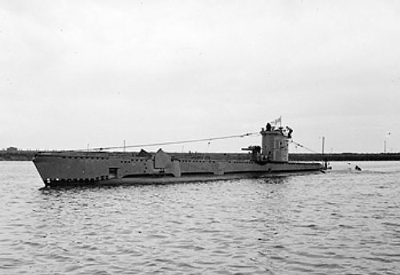
<쓰레기 투척 금지>
샌프란시스코를 입출항하는 항공모함들은 금문교(Golden Gate) 아래를 통과. 월남전 때 반전시위대 중 일부는 베트남에서 돌아오는 항공모함에 대한 항의 표시로 저 다리에 모여 항공모함 비행갑판 위로 쓰레기를 투척하는 사례가 많았다고. 저 사진 속 항모는 USS Hancock (CVA-19)인데, 다리를 통과할 때 일부러 연기를 온 힘을 다해 무럭무럭 뿜어내고 있음. 저렇게 하면 시위대가 다리 위에서 쓰레기를 던지는 행위가 꽤 줄어들었다고. 참고로 USS Hancock은 제2차 세계대전에서 활약한 24척의 Essex-class의 정규항모 중 한 척으로서, 1944년에 진수되었고 만재 배수량 3만6천톤, 속도는 33노트. 1951년에 대대적인 업그레이드를 받고 1952년 정규항모(fleet carrier) CV에서 공격항모(attack carrier) CVA로 재분류됨. 고성능 제트 전투기를 사출할 수 있는 증기 사출기를 장착한 최초의 미국 항모였고, 이 업그레이드에 당시 금액으로 6천만불, 현재 가치로 약 5억7천만불이 들어감. 당시로서는 정규항모였지만 현재는 경항모급으로 분류될 듯.
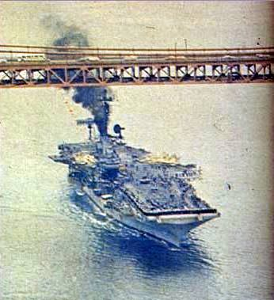
<핵항모의 좌초>
(경항모는 아니지만) 1983년, 오랜 항해 끝에 샌프란시스코 항구로 입항하던 핵항모 USS Enterprise가 항구 코 앞 모래톱에 좌초.
입항을 축하하러 보통 항구에 나오는 승조원들의 가족 뿐만 아니라 이때는 방송 카메라 기자들과 샌프란시스코 시민들, 관광객들, 심지어 군악대까지 모여 있는 자리에서 저 꼴이 남. 이유는 당시 엔터프라이즈에는 당시 최고의 인기프로그램인 스타트렉에서 우주선 엔터프라이즈의 조타수인 Mr. Sulu를 맡은 배우 George Takei가 스페셜 게스트로 타고 있었기 때문.
그런 상태에서는 누구라도 정신줄을 놓기 마련. 함장은 모래톱에 걸린 항모가 뻘에서 떨어지길 기대하며 전체 승조원들을 갑판에 집합시켜 이물쪽에서 고물쪽으로 우르르 몰려가는 짓을 시키기도 함. 몇시간 동안 개망신을 당한 뒤에야 간신히 빠져나옴.
그래도 이미 해군 준장으로 승진이 예정되어 있던 함장 Robert J. Kelly는 징계를 받지 않고 그대로 승진. 결국 four star까지 올라감.
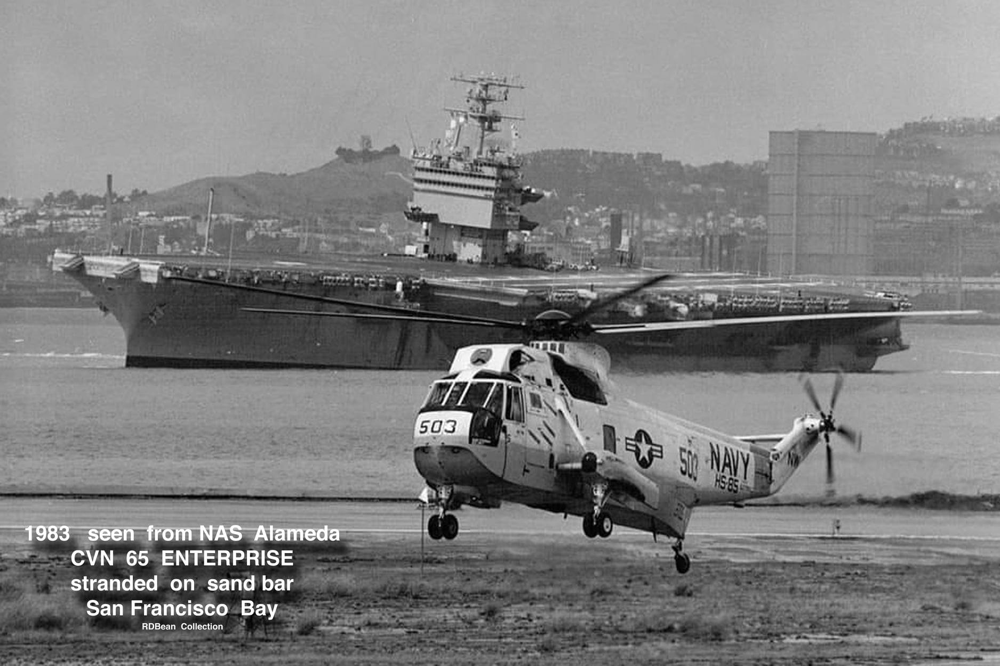 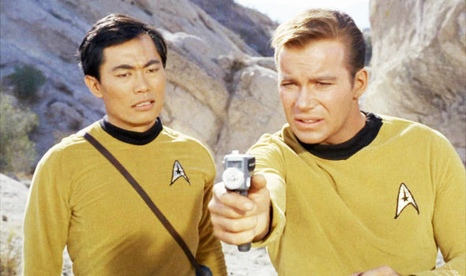
<누가 한국에서 닐 암스트롱을 격추했나>
(경항모는 아니지만) 아래 첫사진은 1952년 1월 18일 한국 근해의 USS Essex 함상의 Corsairs, Skyraiders, Banshees, & Panthers. 한국전에 참전했던 미 항모 근무 해군들은 하나같이 '너무나도 지독한 추위'를 기억한다고. 아마 해군에서도 제설작업하게 될 줄은 몰랐을 듯. (아래 두번째 사진) F9F Panther는 최초의 성공적인 미해군 제트기로서 한국전에서 맹활약. Mig-15에 비하면 느리기 때문에 상대가 안 될 것 같은데 그래도 Mig-15 와도 싸워 통상 2대 격추되고 7대 격추함. 그런데 그 7대 중 4대는 1952년 11월 Royce Williams 대위 혼자서 6대의 Mig-15와 싸워 떨어뜨린 것. 간신히 돌아와 착함한 윌리엄스의 팬써에는 총알 및 파편 자국이 263개나 있을 정도로 만신창이가 되어 폐기 처리해야 했다고. 윌리엄스가 6대와 싸워 혼자서 4대를 떨궜다는 주장은 기록에는 남았으나 당시 다들 별로 믿지를 않았나 본데, 40년 후 소련 기밀 문서 해제되면서 정말 4대가 격추되었고 모두 소련군 조종사들이 조종하던 것이라는 것이 밝혀짐.
그러나 이건 굉장히 예외적인 사례였고, 한국 전쟁 당시 미해군 함재기들은 주로 지상 공격 역할을 했고 공중전은 별로 벌이지 않았음. 이유는 '상대가 되지 않기 떄문'. 공산군은 MiG-15처럼 후퇴익을 가진 제트전투기를 몰고다니는데, 미해군 함재기들은 Panther나 F2H Banshee(아래 3번째 사진)처럼 직선형 날개를 고집. 이유는 해군 고위층이 '후퇴익은 저속 안정성이 떨어져서 항모에 착함할 때 사고가 많이 날 것'이라는 편견이 있었기 때문. 실제로 1980년대 F-18 도입 때까지 이건 어느 정도 사실로 드러나긴 함.
특히 밴쉬는 MiG-15보다 160km/h 정도 속력이 떨어졌기 때문에 MiG-15가 출몰하는 지역인 "MiG alley" 근처를 얼씬거리지 않았음. MiG-15를 상대한 것은 역시 후퇴익을 가진 미공군의 F-86 "Sabre". 그래서 한국전 당시 5대 이상 격추한 ace가 미군에서 40명 가량 나왔는데 대부분 공군이었고 미해군에서는 딱 1명. 그것도 F4U Corsair를 야간 전투기로 개조한 기체였고 격추한 상대는 모두 야간에 활동한 소련군 프로펠러 전투기였음. 대개 미해군 조종사들은 자신들의 실력이 육상발진 조종사에 비해 탁월하다고 자부했는데, 이건 심각한 자존심 상처.
달착륙으로 유명한 닐 암스트롱도 1951년 한국에서 저 F9F 팬써를 몰다 격추되어 비상탈출했는데, 특이하게도 미그기나 대공포에 당한 것이 아니라 계곡 사이에 걸쳐진 와이어에 걸려 떨어졌다고...
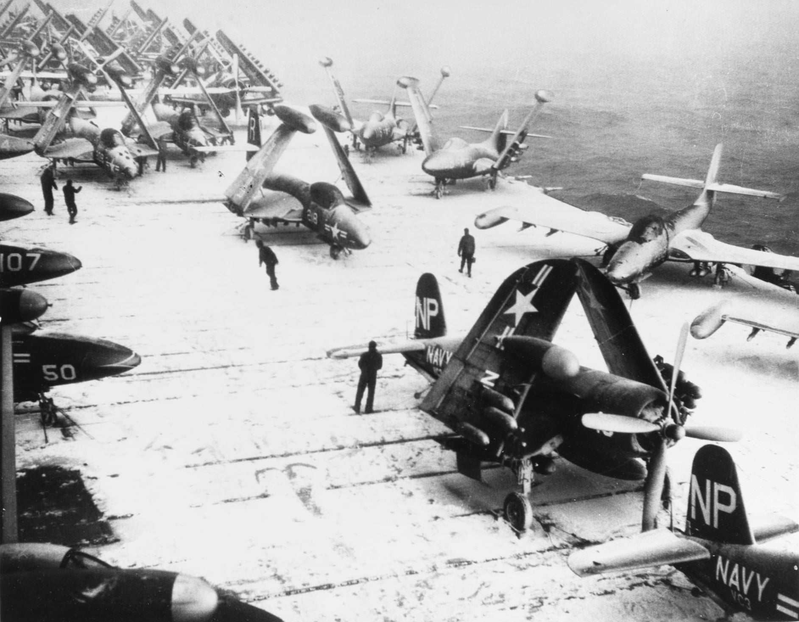 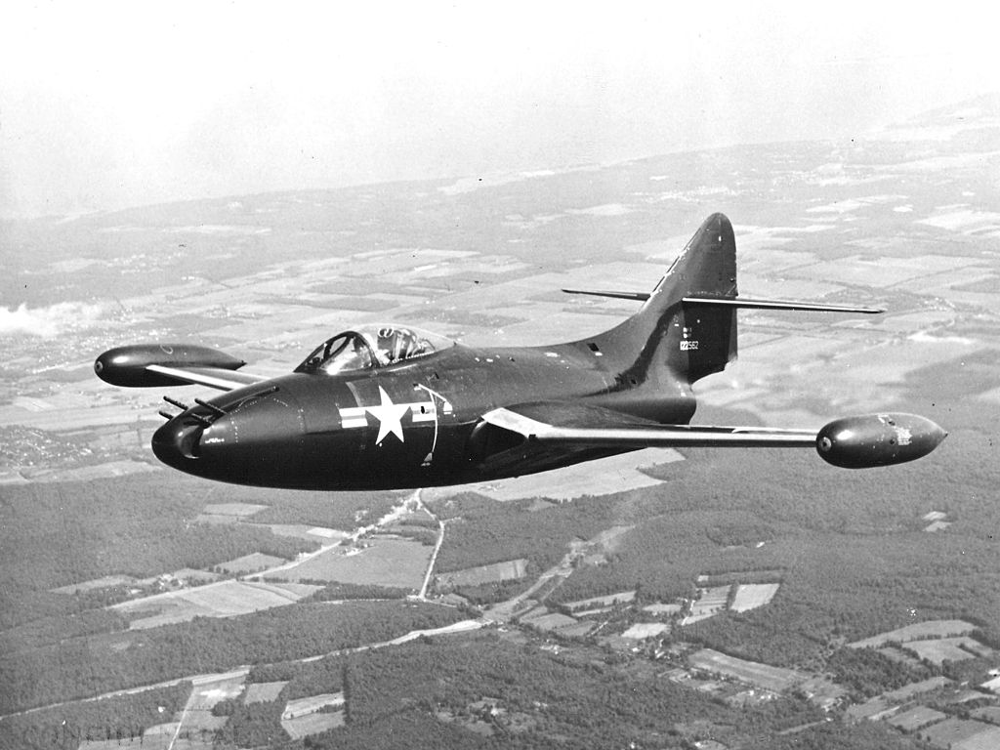 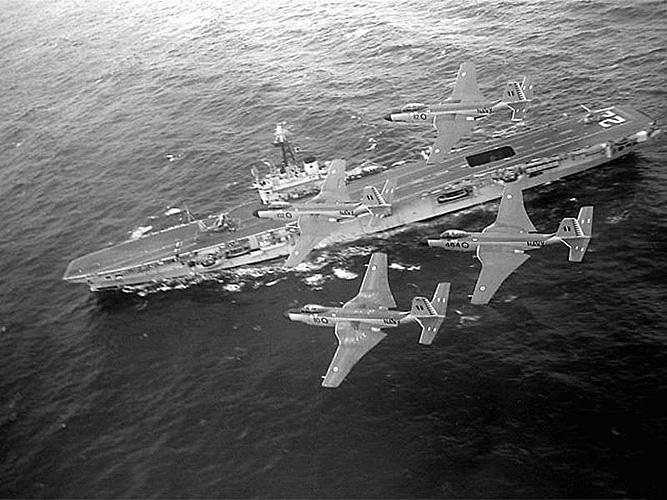
<인류 최후의 뇌격기 공격> (경항모는 아니지만) USS Princeton (CV-37). 24대의 Essex급 항모 중 하나로, 1945년 7월 진수, 만재 3만6천톤, 33노트. 한국전에도 참전했는데, 특이할 만한 것은 역사상 최후의 뇌격기에 의한 공격이 이 항모에서, 오늘날 우리 땅인 강원도 화천댐에 대해 이루어졌음. 1951년 초 이 댐을 북한이 전술적으로 이용하여 홍수를 일으킬 가능성이 제기되자 이 댐의 수문을 파괴하기 위해 프로펠러 함재기인 A-1 Skyraider들이 출격, 로켓포와 폭탄으로 공격했으나 모두 실패. 1951년 5월 1일, 프린스턴에서 또 8대의 스카이레이더가 화천댐으로 출격했는데 이번에는 폭탄이나 로켓이 아닌 어뢰를 달고 날아오름. 물이 가득 찬 화천댐 안에 어뢰를 투하, 이 중 6발이 명중하여 수문 2기를 완파하여 전술적으로 댐을 악용할 여지를 없앰.
이게 쉬운 일처럼 보이지만 굉장히 사연이 많은 이야기인 것이, 당시 미해군은 이미 항공 어뢰를 사용하지 않기로 했기 때문에 표준 무장에 어뢰가 있지도 않았고 조종사들도 어뢰 투하 훈련을 받지도 않았음. 그런데 프린스턴은 한국전쟁 직전에는 이미 예비역으로 돌려진 상태라서 무장도 다 해제된 상태였다가, 급작스럽게 재취역하는 바람에 예전에 하역해둔 무장을 긴급히 다시 싣고 부랴부랴 한국으로 왔기 때문에 계획 없이 다시 적재한 무장 속에 마침 어뢰가 있었던 것임. 하지만 댐 폭파라는 희귀한 임무를 위해서는 표준 어뢰는 아무리 낮게 날아도 너무 깊은 물 속까지 잠항할 거라는 우려가 발생. 이에 대해 누군가가 '진주만 공격 때 일본 해군이 이렇게 했다더라' 하며 널빤지로 어뢰에 보조 날개를 달아 너무 깊이 들어가지 않도록 조치함. 이 상태에서 날아오른 8기의 스카이레이더 중에 어뢰 훈련을 받아본 조종사는 딱 2명. 그러나 수면 위 20m 초저공으로 비행하여 무사히 임무 완수. 그야말로 임기응변의 결정체였던 작전.
이것이 인류 역사상 마지막으로 이루어진 실전에서의 뇌격기 공격. 이 공격을 주도한 해군 전투비행단 VA-195의 부대 명칭은 원래 좀 진부한 "Tigers"였으나 이 공격 성공 이후 더 간지나는 "Dambusters"로 재빨리 바꿈. 현대의 공중 투하 어뢰는 대잠기가 대잠용 어뢰 투하하는 정도. 아이러니컬하게도, 전세계에서 마지막으로 1980년대까지도 수상함정에 대한 뇌격 능력을 유지하고 있던 공군은 바로 북한 공군. Ilyushin Il-28 쌍발 폭격기의 중국제 버전인 H-5가 어뢰 투하 능력을 가지고 있었음. ** 첫사진은 1950~1951년 사이 한국 근해의 USS Princeton ** 어뢰를 장착한 A-1 Skyraider ** 1951년 5월 폭격 이후의 화천댐
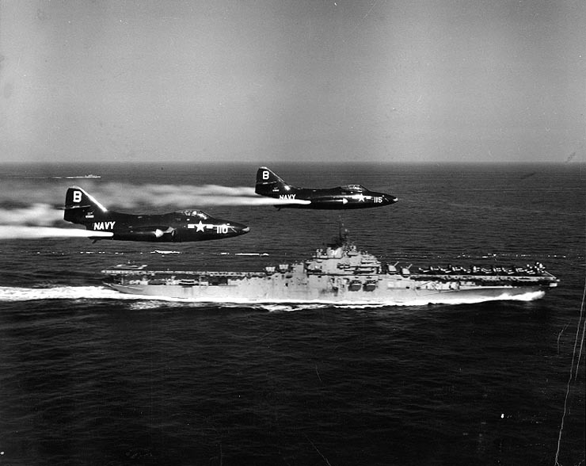 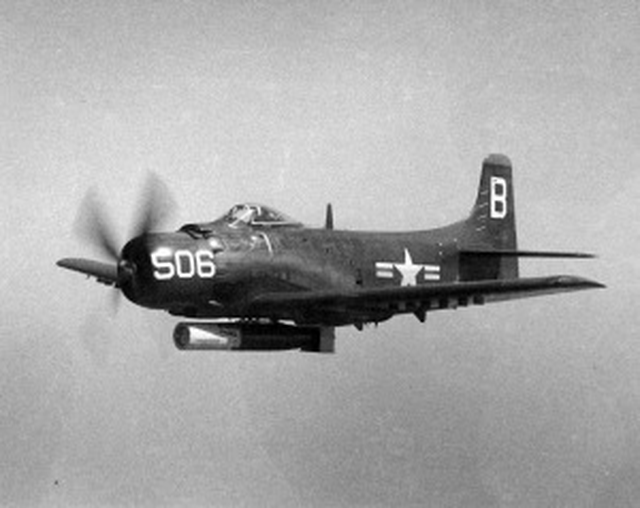 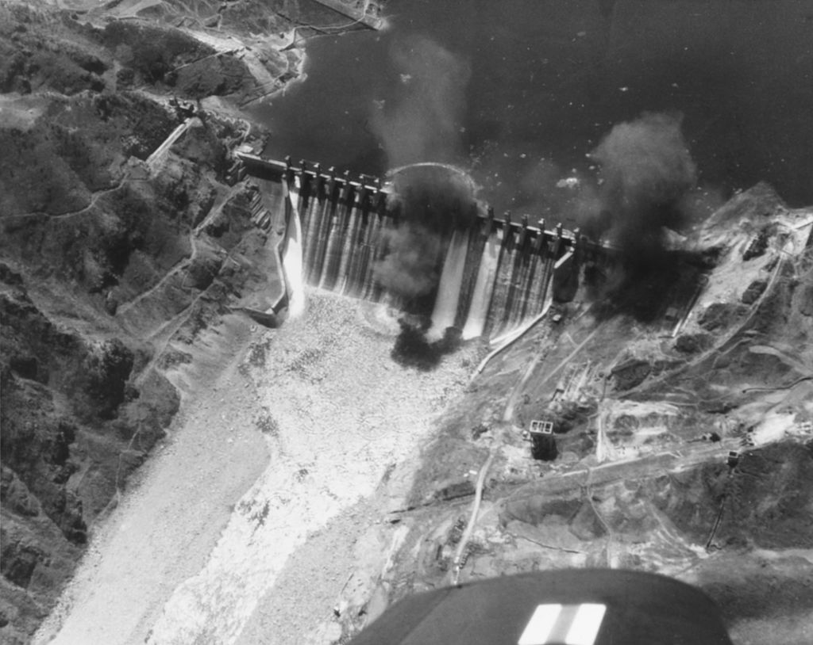
** 대부분의 사진과 자료들은 페이스북 "CARRIERS" 그룹과 위키피디아에서...